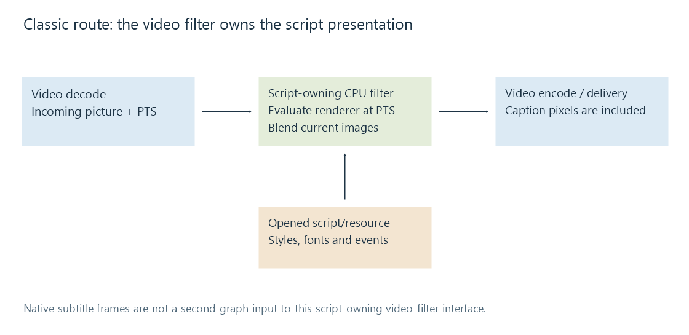

Classic subtitle overlay pipeline
The classic subtitle route lets a video filter own script reading and libass rendering, then composes into CPU pictures before output encoding.
A classic script-based route inserts a subtitle-rendering video filter into the picture chain. The filter opens the subtitle resource, prepares a renderer and draws the script onto incoming pictures.
“Classic” is a teaching label for this architecture. It is not an Emby setting name or a promise that a particular session selects it.

Initialization builds a presentation
In the examined Emby FFmpeg source, ass reads an ASS script, while subtitles can open a media resource and decode its chosen subtitle content into a libass track. The latter also has an attachment-recovery path for applicable fonts.
Initialization gives the renderer event data, styles and font-provider resources. It does not mean all cues are drawn once as static bitmaps. When a picture is processed, the filter supplies its presentation time to libass and receives the images appropriate to that instant.
That per-picture evaluation matters for motion, fades and karaoke within an event. A single cue can have the same words for several seconds while its presentation changes from frame to frame.
The filter blends those images into CPU picture samples. The output of that boundary is ordinary video with visible caption pixels.
A trimmed excerpt has two possible clocks
Suppose the original programme contains a cue at 612.5–615.0 seconds. A delivered excerpt starts at original programme time 600 seconds.
| Clock carried by the picture branch | Correct cue interval in that clock |
|---|---|
| Original programme time retained | 612.5–615.0 s |
| Excerpt rebased to zero | 12.5–15.0 s |
Rebasing the pictures while retaining an unadjusted script would make the cue wait until 612.5 seconds of the excerpt. Subtracting 600 from both start and end establishes the second mapping; subtracting it twice would be equally wrong.
This is a timeline model, not a command recipe. Containers, demuxing, seeking and filter setup determine which origin a real route uses. The renderer must receive a coherent relationship between picture time and script time.
Placement follows the chosen rendering plane
ASS can describe an authored script plane, anchor positions and margins. The filter must relate that plane to the current video geometry and any original-size information it uses.
For a 1920 × 1080 source reduced to 1280 × 720, a simple proportional mapping has scale 2/3. An anchor at (960, 900) maps to (640, 600). Crop, aspect-ratio treatment and text-layout rules can require more than this proportional model.
Rendering into the full-size picture and then scaling also resamples the caption edges. Rendering at the target resolution allows a fresh rasterization, but still needs correct script geometry and fonts. The chosen graph order therefore affects appearance even when the text and cue interval remain identical.
The CPU boundary determines transfers
Hardware decoding can produce device frames. If those pictures pass through this CPU subtitle filter, the route needs an appropriate transition to CPU memory. A later hardware encoder may require them to return to device memory.
This transition is distinct from rendering a small subtitle image on the CPU and uploading only that image to a device compositor. The software overlay article quantifies the frame-sized payloads, while hardware pipelines examine the alternative boundary.
The script-owning design keeps its presentation resource inside the video filter. The native subtitle filtering route exposes that resource as a separate decoded branch, making subtitle transformations visible before the compositor.
These implementation observations refer to 5.1-emby_2023_06_25_u1. Filter presence in a source archive does not identify which route a current installation selected.
See Also
- Legacy subtitle overlay filters
- Subtitle overlay pipeline fundamentals
- Subtitle filtering pipeline
- Software subtitle overlay